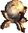
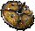
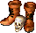

Artifact Boost — report on the improved artifacts
Mod addition-to-wog.wog-artifact-rebalance.artifact-boost. Descriptions were checked against the strings
the VCMI 1.7.5 engine actually applies; the actual effect — against the bonuses in the configs;
the original descriptions are taken from artraits.txt of the base Heroes III.
26
artifacts
22
in artifact-boost
4
elemental orbs
0
discrepancies
matches the description matches the code
inaccuracy the description diverges from the code
gap the effect is not described at all
unchanged the bonus is identical to the base one
| Artifact name | In-game description | Actual effect | Era behavior (as intended) | Original description |
|---|---|---|---|---|
Bird of PerceptionbirdOfPerception |
matches Grants +5% to the Eagle Eye skill and 6 level 3 creatures per week to the town where the hero is located. |
|
6 Royal Griffins per week.Original: granted 6 Royal Griffins (level 5) weekly. Reduced in the mod to 6 level 3 creatures. | Bird of Perception This figurine increases your Eagle Eye skill by 5%. |
Pendant of LifependantOfLife |
matches Renders your units immune to the Death Ripple spell and grants 24 level 1 creatures per week to the town where the hero is located. |
|
24 Sprites per week.Original: 24 Sprites weekly. The mod grants 24 level 1 creatures: the Sprite is level 1, so for Rampart the result is the same. | Pendant of Life This pendant protects your warriors from the Death Ripple spell. |
Pendant of DeathpendantOfDeath |
matches Renders your undead units immune to the Destroy Undead spell. In addition, all undead stacks in the hero's army gain +2 Attack and +2 Defense. |
|
12 Zombies per week.Original: 12 Zombies weekly. Growth and +1 speed removed; the undead Attack and Defense bonuses were added by this mod. | Pendant of Death This pendant protects your warriors from the Destroy Undead spell. |
Pendant of Total RecallpendantOfTotalRecall |
matches Immunity to Forgetfulness. At the start of every battle casts Expert Precision. |
|
1000 experience per week.Original: 1000 experience weekly. The experience bonus was removed; only the opening Precision remains. | Pendant of Total Recall This pendant protects your warriors from the Forgetfulness spell. |
Emblem of CognizanceemblemOfCognizance |
matches Grants +15% to the Eagle Eye skill and produces 2 gold per day for every creature in the hero's army. |
|
15 gold per creature per week.Original: paid 15 gold per warrior once a week. The mod pays 2 gold per warrior every day, which over a week gives 14 gold versus the original 15. | Emblem of Cognizance This talisman increases your Eagle Eye skill by 15%. |
Stoic WatchmanstoicWatchman |
matches Grants +10% to the Eagle Eye skill and increases the sight radius by 5. |
|
Revealed a large map area once a week.Original: revealed part of the map weekly. Replaced with a permanent +5 sight radius. | Stoic Watchman This figurine increases your Eagle Eye skill by 10%. |
Pendant of Second SightpendantOfSecondSight |
matches Immunity to Blind. Free upgrades in the hero's army: Archers, Wood Elves, Gremlins, Gogs, Beholders, Orcs, Lizardmen, Air Elementals. At the start of every battle casts Expert Air Shield. |
|
Upgraded these creatures once a week.Original: upgraded shooters weekly. Replaced with a free upgrade at any moment. | Pendant of Second Sight This pendant protects your warriors from the Blind spell. |
Pendant of HolinesspendantOfHoliness |
matches Immunity to Curse. Teaches the hero: Bless, Cure, Prayer. At the start of every battle casts Expert Bless. |
|
Gave a random "holy" spell once a week.Original: a random holy spell weekly. Replaced with permanent training in all three. | Pendant of Holiness This pendant protects your warriors from the Curse spell. |
Boots of PolaritybootsOfPolarity |
matches Increases magic resistance by 15% and grants a few land movement points. |
|
Could be traded for a one-time movement bonus.Original: exchanged for a one-time movement boost. Replaced with a permanent +300 — half of the usual Boots of Speed. | Boots of Polarity These boots, worn on the feet, increase your Magic Resistance skill by 15%. |
Garniture of InterferencegarnitureOfInterference |
matches Increases magic resistance by 5% and raises the mastery level of all magic schools by 1. |
|
Could be traded for a magic skill.Original: exchanged for learning a magic school. Replaced with a permanent +1 to all schools. | Garniture of Interference This hereditary armor, worn on the neck, increases your Magic Resistance skill by 5%. |
Pendant of DispassionpendantOfDispassion |
matches Immunity to Berserk. +1 Knowledge. At the start of every battle casts Expert Bloodlust. |
|
+1 Knowledge per week.Original: +1 Knowledge weekly. Replaced with a permanent +1. | Pendant of Dispassion This pendant protects your warriors from the Berserk spell. |
Pendant of Free WillpendantOfFreeWill |
matches Immunity to Hypnotize. Free upgrades: Peasants -> Rogues, Stone -> Iron -> Gold -> Diamond Golems. At the start of every battle casts Expert Stone Skin. |
|
Upgraded these creatures once a week.Original: weekly upgrade. Replaced with a free upgrade at any moment. | Pendant of Free Will This pendant protects your warriors from the Hypnotize spell. |
Diplomat's RingdiplomatsRing |
matches Reduces the cost of surrendering by 10% and produces 500 gold per day. |
|
Could be traded for doubling all level 1 stacks.Original: exchanged for doubling level 1 stacks. Replaced with a permanent income of 500 gold per day. | Diplomat's Ring The Diplomat's Ring, worn on the finger, reduces the cost of surrender. |
Surcoat of CounterpoisesurcoatOfCounterpoise |
matches +10% magic resistance, +1 Knowledge, +3 sight radius, 1000 gold per day. |
|
Doubled the effects of the other boosted artifacts.Original: a multiplier on other boosters. Impossible to reproduce — replaced with a set of permanent bonuses. | Surcoat of Counterpoise This surcoat, worn on the shoulders, increases your Magic Resistance skill by 10%. |
Orb of VulnerabilityorbOfVulnerability |
matches Removes the natural magic resistance of all creatures on the battlefield. 1 level 6 creature per week to the town where the hero is located. At the start of every battle casts Expert Disease on all enemies. |
|
1 Arch Mage + one per Wisdom level per week.Original: the amount depended on Wisdom. The mod grants a fixed 1 level 6 creature per week. | Orb of Vulnerability During combat, this artifact neutralizes the natural magic immunity that some troops on the battlefield may have. |
 Sphere of PermanencesphereOfPermanence |
matches Renders your units immune to the Dispel spell and grants 2 level 5 creatures per week to the town where the hero is located. |
|
1 Mighty Gorgon + one per 10 Defense per week.Original: growth depended on the hero's Defense. Replaced with 2 level 5 creatures per week. | Sphere of Permanence This sphere makes your warriors immune to the effects of the Dispel spell. |
Statesman's MedalstatesmansMedal |
matches Reduces the cost of surrendering by 10% and produces 500 gold per day. |
|
Could be traded in a town for building up to three structures.Original: exchanged for construction. Replaced with a permanent income of 500 gold per day. | Statesman's Medal The Statesman's Medal, worn around the neck, reduces the cost of surrender. |
Ambassador's SashambassadorsSash |
matches Reduces the cost of surrendering by 10% and produces 500 gold per day. |
|
Reduced the cost of surrender.Original: only the surrender discount. The mod added 500 gold per day. | Ambassador's Sash The Ambassador's Sash, worn on the shoulders, reduces the cost of surrender. |
 Targ of the Rampaging OgretargOfTheRampagingOgre |
matches Increases Defense by 5 and increases all experience the hero gains by 5%. |
|
Provoked a fight with 30 Ogres once a week.Original: a weekly skirmish. Replaced with +5% to all hero experience. | Targ of the Rampaging Ogre This small round shield, held in the left hand, adds 5 to your Defense skill. |
 Dead Man's BootsdeadMansBoots |
matches +15% Necromancy and +2 speed to all undead stacks in the hero's army. |
|
Created a copy of itself once a week.Original: spawned copies weekly. Creature growth and Skeleton upgrades removed — only Necromancy and undead speed remain. | Dead Man's Boots These boots, worn on the feet, increase your Necromancy skill by 15%. |
Magic WandmagicWand |
matches When your hero attacks in battle, there is a 25% chance that the struck enemy stack turns into creatures of the attacker's type. The total health of the stack is preserved. Only living enemies are affected; the converted stack stays on the enemy side. |
|
Randomly replaced the hero's equipped artifacts every day. The pair of slots depended on which Misc slot the wand occupied.Original: weekly artifact transformation, impossible to reproduce in VCMI. Replaced with combat transmutation of enemies. | Magic Wand Heroes III has no such artifact — it was added by the Wake of Gods expansion. Originally it randomly replaced the hero's equipped artifacts every day. |
Collar of ConjuringcollarOfConjuring |
matches Increases the duration of all your spells by 1 turn and increases all experience the hero gains by 10%. |
|
Increased spell duration by 1.Original: only +1 duration. The +10% experience bonus was added by this mod. | Collar of Conjuring This collar, worn around the neck, increases the duration of all your spells by 1. |
Speculumspeculum |
matches Increases the hero's sight radius by 2 tiles instead of 1. |
|
Sight radius +1.Original: +1 to sight radius. The mod doubles the bonus to +2. | Speculum The Speculum increases your sight radius by 1 tile. |
Elemental orbs — +50% school damage and an expert ward at the start of battle
| Artifact name | In-game description | Actual effect | Era behavior (as intended) | Original description |
|---|---|---|---|---|
Orb of the FirmamentorbOfTheFirmament |
matches +50% damage to Air magic spells. At the start of every battle casts Expert Air Protection on all troops. |
|
Base core effect, unchanged.WoG had no separate behavior; the mod added the opening battle spell. | Orb of the Firmament This powerful artifact increases the damage of Air spells by 50%. |
Orb of SiltorbOfSilt |
matches +50% damage to Earth magic spells. At the start of every battle casts Expert Earth Protection. |
|
Base core effect, unchanged. | Orb of Silt This powerful artifact increases the damage of Earth spells by 50%. |
Orb of Tempestuous FireorbOfTempestuousFire |
matches +50% damage to Fire magic spells. At the start of every battle casts Expert Fire Protection. |
|
Base core effect, unchanged. | Orb of Tempestuous Fire This powerful artifact increases the damage of Fire spells by 50%. |
Orb of Driving RainorbOfDrivingRain |
matches +50% damage to Water magic spells. At the start of every battle casts Expert Water Protection. |
|
Base core effect, unchanged. | Orb of Driving Rain This powerful artifact increases the damage of Water spells by 50%. |